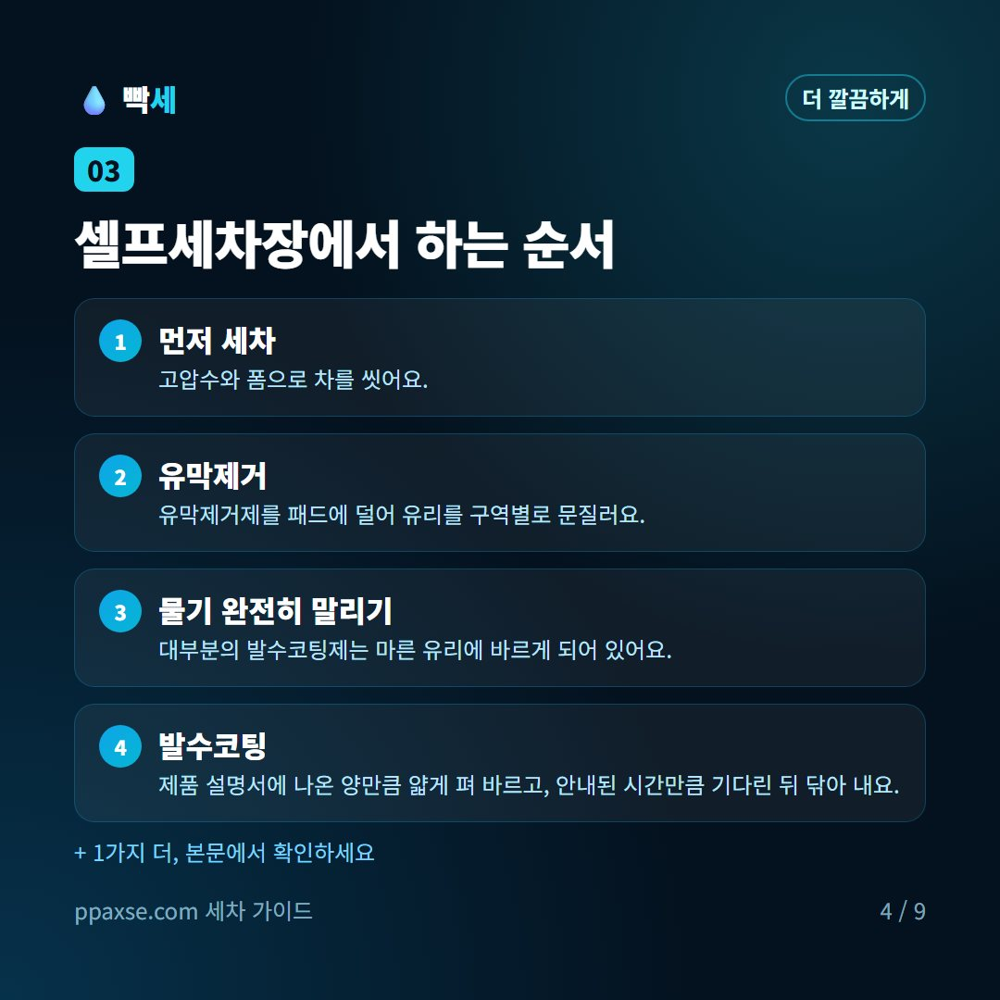
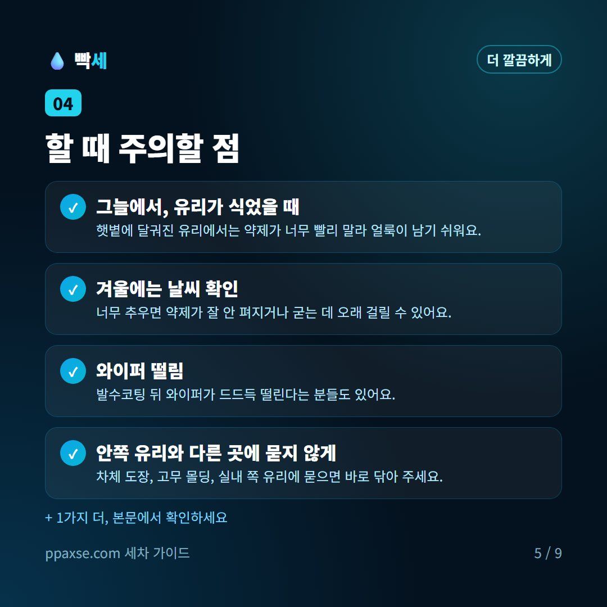
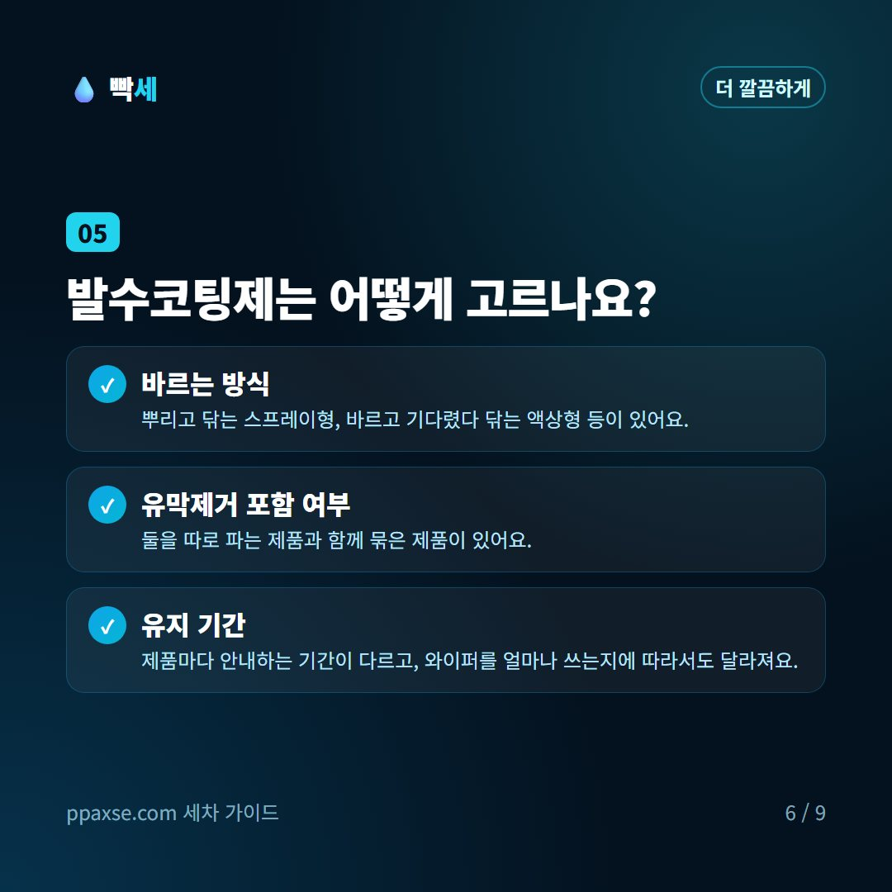

유막제거·발수코팅 셀프로 하는 법 — 앞유리 시야가 뿌옇다면
비 오는 날이나 밤에 앞유리가 유난히 번져 보이고, 와이퍼를 켜도 물이 얇게 퍼진다면 유막 때문일 수 있어요. 이럴 때 많이 하는 게 유막제거 → 발수코팅이에요. 이 글에서는 둘이 각각 무엇인지, 셀프세차장에서 어떤 순서로 하면 좋은지 정리했어요.
유막이 뭔가요?
유막은 유리 위에 생기는 얇은 기름 막이에요. 도로의 매연, 기름 섞인 먼지, 와이퍼 고무 찌꺼기, 왁스나 세제 성분 같은 것이 쌓여서 생겨요. 맑은 날에는 잘 안 보이지만, 물이 닿으면 고르게 흐르지 않고 얼룩지듯 번져서 시야를 흐리게 해요.
유막제거와 발수코팅은 뭐가 다른가요?
- 유막제거 — 유리에 쌓인 기름 막을 벗겨 내는 작업이에요. 전용 유막제거제를 패드나 스펀지에 묻혀 문질러요.
- 발수코팅 — 깨끗해진 유리 위에 물을 튕겨 내는 막을 입히는 작업이에요. 빗물이 방울로 맺혀 바람에 날아가서 시야가 좋아져요.
유막이 남은 채로 발수코팅을 하면 코팅이 고르게 붙지 않을 수 있어서, 유막제거를 먼저 하는 분들이 많아요. "유막제거 발수코팅"을 한 번에 하는 제품도 있어요.
셀프세차장에서 하는 순서

- 먼저 세차 — 고압수와 폼으로 차를 씻어요. 유리 위의 모래나 먼지를 그대로 두고 문지르면 흠집이 날 수 있어요.
- 유막제거 — 유막제거제를 패드에 덜어 유리를 구역별로 문질러요. 문지른 뒤 물로 헹궜을 때 물이 유리 전체에 얇게 고르게 퍼지면 잘 벗겨진 거예요.
- 물기 완전히 말리기 — 대부분의 발수코팅제는 마른 유리에 바르게 되어 있어요. 깨끗한 타월로 물기를 꼼꼼히 닦아요.
- 발수코팅 — 제품 설명서에 나온 양만큼 얇게 펴 바르고, 안내된 시간만큼 기다린 뒤 닦아 내요.
- 굳는 시간 지키기 — 바로 비를 맞거나 와이퍼를 쓰면 코팅이 덜 붙을 수 있어요. 기다리는 시간은 제품마다 달라서 설명서를 따라 주세요.
할 때 주의할 점

- 그늘에서, 유리가 식었을 때 — 햇볕에 달궈진 유리에서는 약제가 너무 빨리 말라 얼룩이 남기 쉬워요.
- 겨울에는 날씨 확인 — 너무 추우면 약제가 잘 안 펴지거나 굳는 데 오래 걸릴 수 있어요. 겨울철 세차 요령은 겨울철 셀프세차 방법과 주의점에 정리해 두었어요.
- 와이퍼 떨림 — 발수코팅 뒤 와이퍼가 드드득 떨린다는 분들도 있어요. 코팅이 고르지 않거나 와이퍼 고무가 낡았을 때 그런 경우가 있다고 해요. 앞유리는 코팅하지 않고 옆·뒷유리만 하는 분들도 있어서 의견이 갈려요.
- 안쪽 유리와 다른 곳에 묻지 않게 — 차체 도장, 고무 몰딩, 실내 쪽 유리에 묻으면 바로 닦아 주세요.
- 매장 규칙 확인 — 셀프세차장에 따라 약제 사용이나 오래 자리를 쓰는 것을 제한하는 곳도 있어요. 드라잉 존처럼 정해진 곳에서 하는 게 좋아요.
발수코팅제는 어떻게 고르나요?

특정 제품을 추천하기보다, 고를 때 많이 보는 기준을 정리해 드릴게요.
- 바르는 방식 — 뿌리고 닦는 스프레이형, 바르고 기다렸다 닦는 액상형 등이 있어요. 처음이라면 설명이 간단한 제품이 편해요.
- 유막제거 포함 여부 — 둘을 따로 파는 제품과 함께 묶은 제품이 있어요.
- 유지 기간 — 제품마다 안내하는 기간이 다르고, 와이퍼를 얼마나 쓰는지에 따라서도 달라져요.
세차 뒤 유리에 남은 얼룩이 고민이라면 세차 후 물자국(워터스팟), 왜 생기고 어떻게 줄일까요도 함께 보세요.
내 주변 셀프세차장 찾기
유막제거나 발수코팅을 하려면 물을 쓸 수 있고, 차를 닦을 자리가 넉넉한 곳이 편해요. 빡세 지도에서는 셀프세차장과 드라잉 존 같은 시설 정보를 이용자들이 함께 채워가고 있어요. 지역별 목록은 지역별 세차장 모음에서 볼 수 있어요.
다녀온 곳에 드라잉 존이 있었는지, 약제를 써도 되는 분위기였는지 한마디로 남겨 주시면 다음 사람에게 큰 도움이 돼요.
셀프세차·노터치·손세차를 종류별로 골라 보고, 폼건·온수·하부세차 같은 시설 정보도 확인할 수 있어요.
🗺️ 세차장 지도 열기✏️ 자주 가는 세차장에 한마디 남기기🎁 한마디를 남기면 가입 없이도 매주 기프티콘 추첨에 응모돼요.